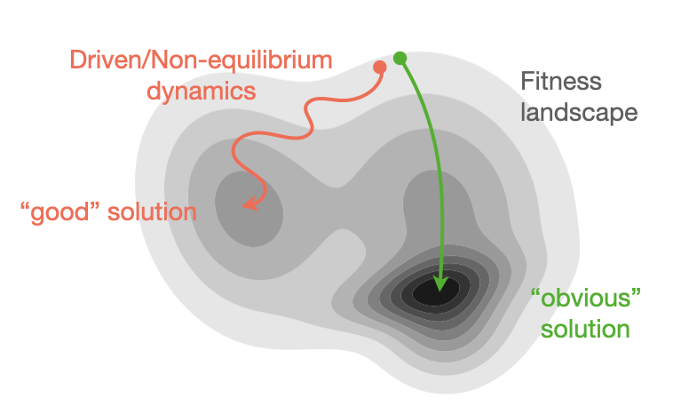
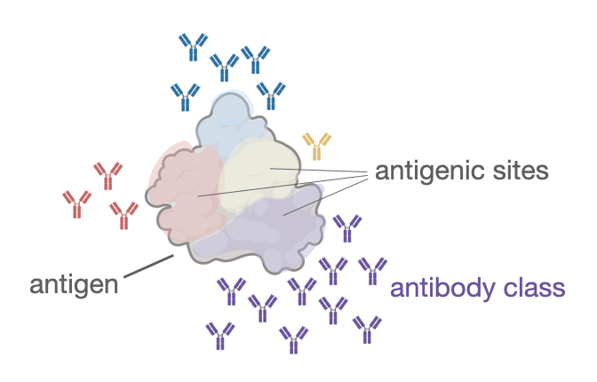
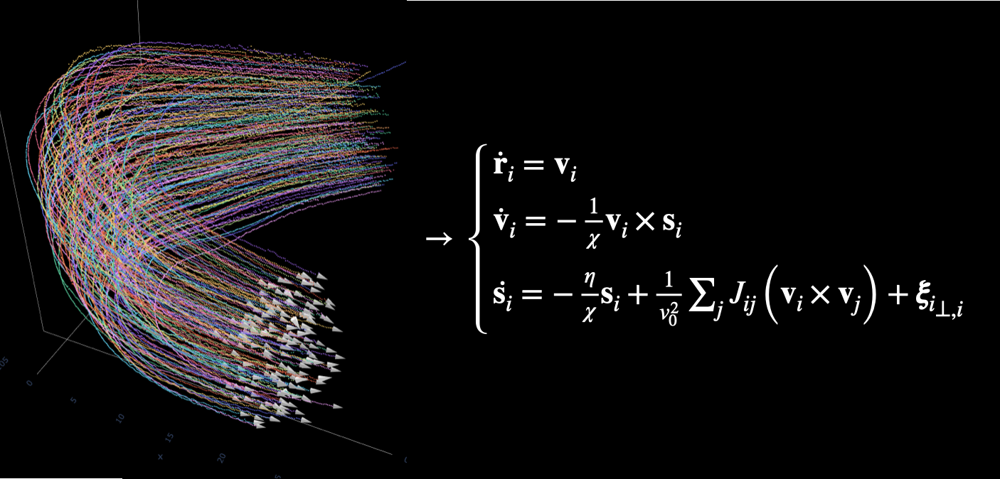
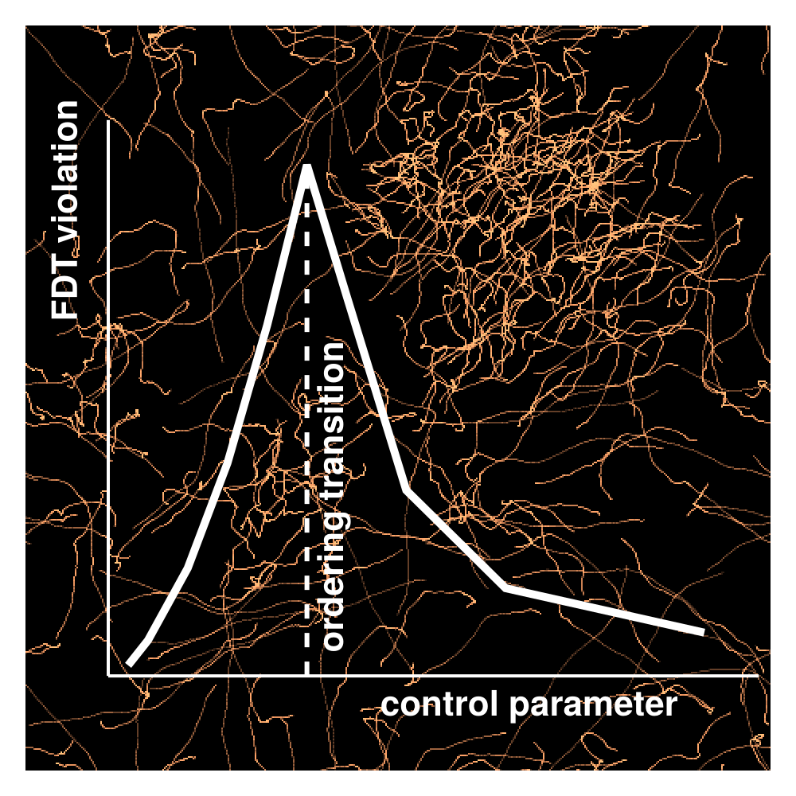

Implicit regularization in evolution

How can evolution navigate fitness landscapes to find solutions with desirable properties — e.g., robustness to changing tasks, evolvability, modularity — which are hard to directly select for? What molecular and physical processes can biological systems exploit as mechanisms of implicit regularization? Can we characterize the inductive bias they introduce?
Relevant publications
- Learning to generalize in evolution through annealed population heterogeneity, arXiv 2025. [arXiv]
Antibody immunodominance

When multiple hosts get infected by a virus, they tend to develop quite stereotyped antibody responses (if looked at the right level of coarse-graining). What drives the emergence of the phenomenon? How reproducible is it across hosts? Can we manipulate this stereotipy? Combining tools from statistical physics, disordered systems and extreme value theory offers a quantitative view on this problem that can bridge the gap between molecular and epidemiological scales.
Relevant publications
Data-driven stochastic modeling

Learning effective models of stochastic processes from data is something that raises both technical challenges and fundamental questions which I find it interesting to think about, especially when the data are coming from biological systems.
Relevant publications
Non-equilibrium collective phenomena

Some collective behaviors emerge exclusively out of equilibrium — flocking being a paradigmatic example. Understanding how the breakdown of detailed balance interplays with the breaking of other symmetries, and what detectable signatures it leaves at different scales, has long been a central question in the physics of active and living matter.
Relevant publications